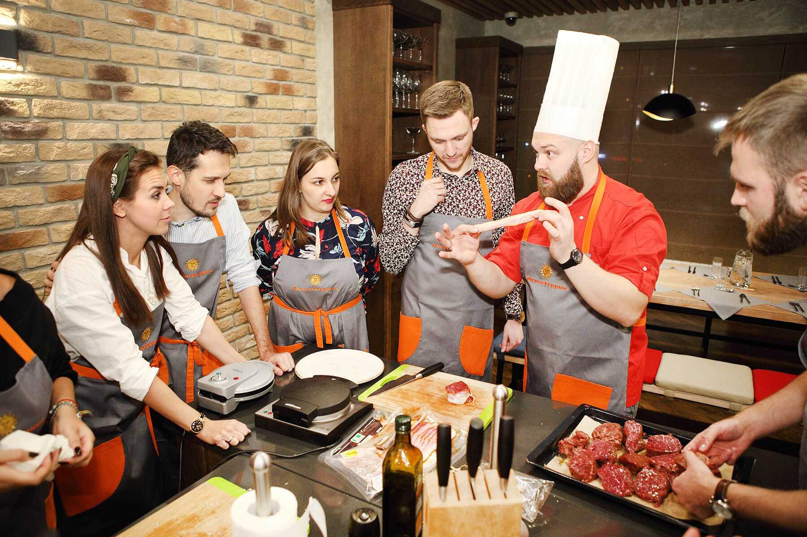
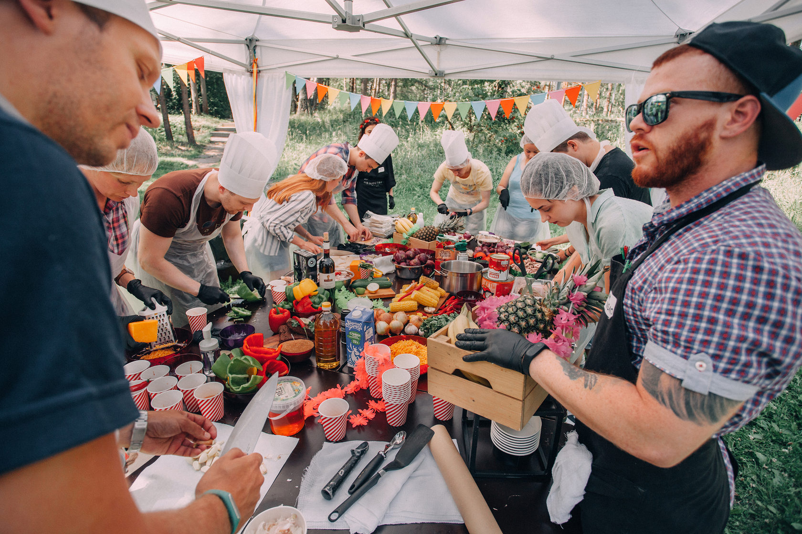
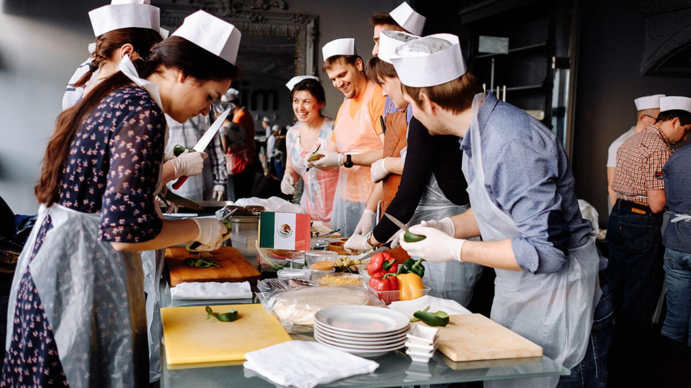

Наши Специальные Мероприятия:
Присоединяйтесь к нам на наших специальных мероприятиях и вечерах, где мы предлагаем уникальные кулинарные впечатления. Это может быть тематический ужин, винный вечер или фестиваль кулинарных шедевров. Следите за нашим календарем событий, чтобы не пропустить ни одной увлекательной встречи!

Профессиональные Кулинарные Мастер-классы:
Хотите научиться готовить ваши любимые блюда под руководством наших шеф-поваров? Присоединяйтесь к нашим кулинарным мастер-классам, где вы сможете не только насладиться процессом создания великолепных блюд, но и улучшить свои навыки в искусстве кулинарии.

Следите за нашим блогом или страницей новостей, чтобы быть в курсе последних обновлений, новых блюд в меню, а также узнавать интересные факты из мира кулинарии. Мы также делимся рецептами, чтобы вы могли попробовать создать наши угощения дома.
Присоединяйтесь к нам и дайте вдохновить ваш вкусовой опыт вместе с "Нежные Вкусы"!
